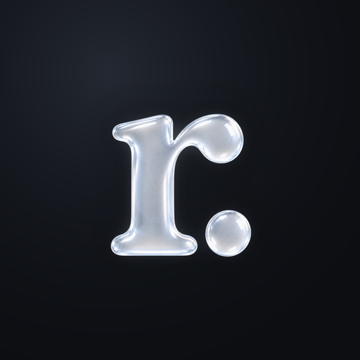
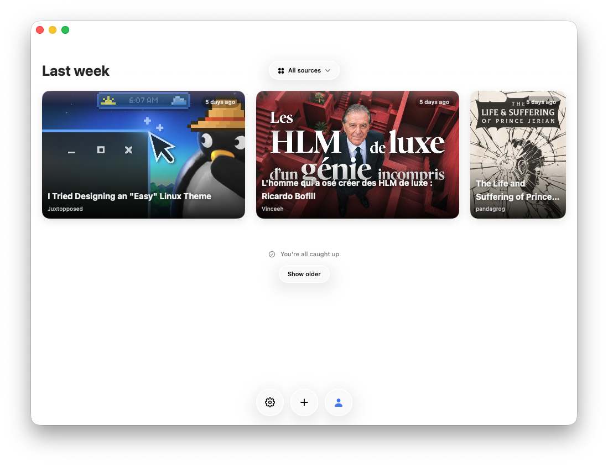
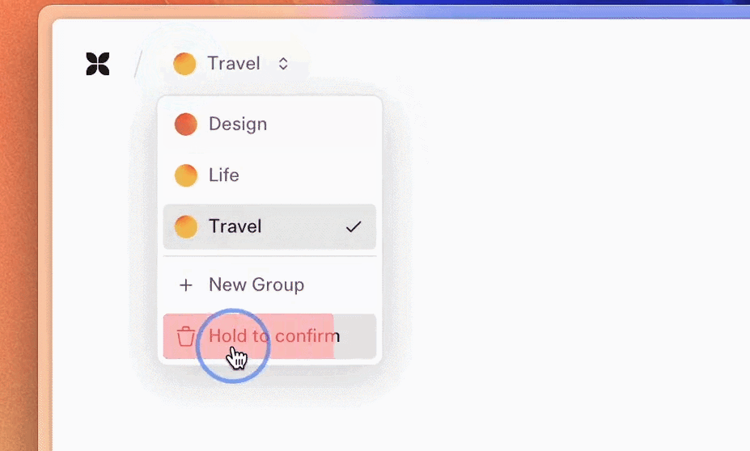
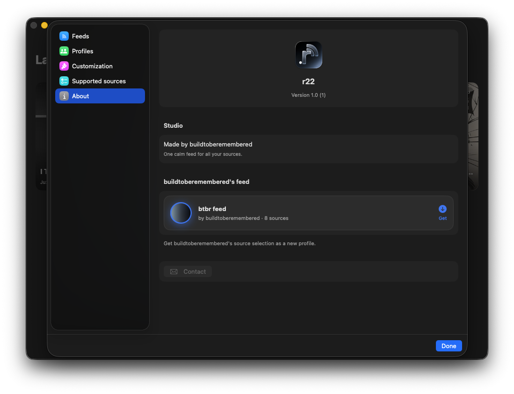

Reed
One feed for all your sources. Articles, videos and updates in a single reading space, organised into profiles you can share.




One feed for all your sources. Articles, videos and updates in a single reading space, organised into profiles you can share.


